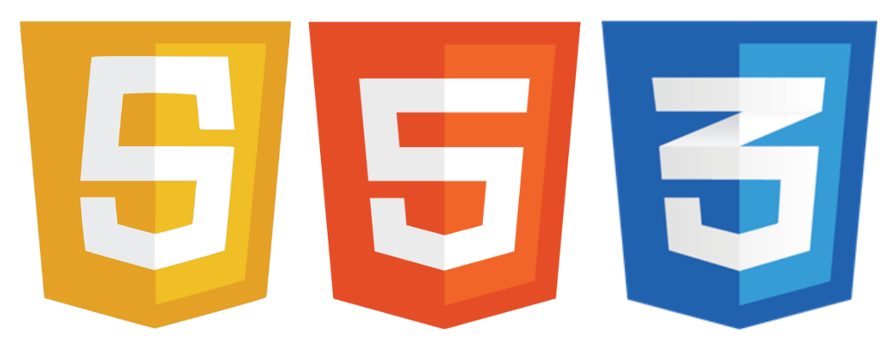
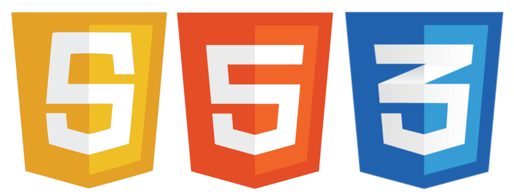

CURRÍCULO
Estudante de Gestão da Tecnologia da Informação, sou um desenvolvedor com experiência em Node.js, Python e PHP. Recentemente venho me aprofundando mais no mundo backend, comprometido com o aprendizado contínuo em desenvolvimento de software. Meu objetivo é colaborar em projetos desafiadores, onde possa aplicar minhas habilidades e crescer profissionalmente.
FORMAÇÃO ACADÊMICA E LÍNGUAS
- ENSINO SUPERIOR em Gestão da Tecnologia da Informação | NOTURNO | Universidade Nove de Julho | PREVISÃO DE CONCLUSÃO: 2024
- ENSINO MÉDIO | E.E Maria da Conceição Moura Branco | ANO DE CONCLUSÃO: 2019
- INGLÊS | INTERMEDIÁRIO | CURSANDO | Web english (Professor Particular)
EXPERIÊNCIAS
- Desenvolvimento Web: Experiência em HTML, CSS, JavaScript, frameworks (React, Angular, Vue).
- Programação: Conhecimento em linguagens de programação relevantes, como Python, JavaScript e Node.js.
- Gestão de Projetos: Habilidades em gerenciamento de projetos, metodologias ágeis (Scrum, Kanban) e ferramentas de colaboração (por exemplo, Jira).
VIVÊNCIA EXTRACURRICULAR
- Freelancer em Desenvolvimento Web
- Desenvolvimento front-end com HTML, CSS, e JavaScript.
- Integração e uso de APIs.
- Criação e otimização de landing pages.
- Desenvolvimento Backend de softwares de automação.
- Trabalho em equipe e gestão de projetos.
Período: Janeiro de 2022 até Outubro de 2023
Resumo da Experiência: Durante este período, atuei primariamente no desenvolvimento de websites e landing pages, empregando tecnologias como HTML, CSS e JavaScript. Meu foco estava na criação de soluções eficazes para divulgação e lançamento de produtos digitais, incorporando o uso de APIs para melhorar a interatividade e funcionalidade dos sites.
Aprendizado e Crescimento: Esta experiência foi uma jornada de constante aprendizado, onde aprimorei minhas habilidades técnicas e adquiri valiosos insights sobre trabalho em equipe e desenvolvimento de projetos.
Habilidades Desenvolvidas:
CERTIFICADOS E CURSOS
- FORMAÇÂO: Logica de programação - Desenvolvendo jogos em JavaScript| ALURA | 2022
- FORMAÇÂO: A Partir do Zero: HTML e CSS para Desenvolvimento Web | ALURA | 2022
- FORMAÇÂO: Aprenda a programar em Python com Orientação a Objetos | ALURA | 2023
- FORMAÇÂO: Aprenda a programar em JavaScript com foco no back-end |ALURA | 2023
PROJETOS
- Acesse Meus Projetos - Aqui!
Fale direto comigo!
 Whatsapp

Whatsapp
